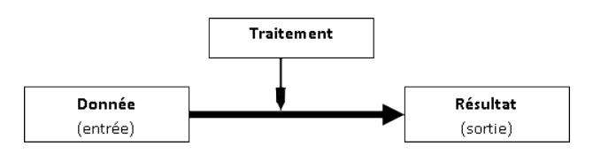
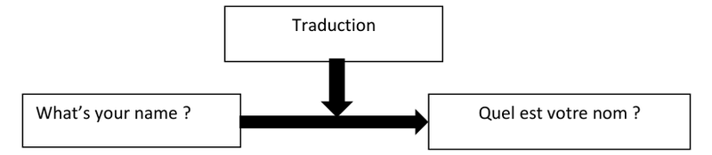
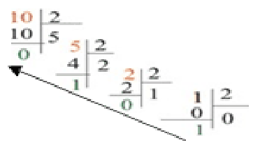

Chapitre 1 : Définition et vocabulaire de base
Module 1 : Généralités sur les systèmes informatiques — TAHRI Aissa
I. Définition de l’information
Une information est une connaissance ou donnée ayant un sens, que l'on peut traiter, stocker et transmettre.
- L’information prend plusieurs formes : texte, image, son
- On peut dire que « une information est un support de connaissance »
II. Traitement de l’information
1. Définition
- Un traitement est l’ensemble des techniques permettant de stocker, d’élaborer, de modifier, de manipuler… les informations.
- Exemple : Traitement de texte(s) : ensemble des techniques informatiques qui permettent la saisie, la mémorisation, la correction, l'actualisation, la mise en page et la diffusion de textes.
2. Le schéma de traitement

Le schéma de traitement
Exemple

Exemple : la traduction
3. Traitement automatique
- Un traitement automatique est un traitement effectué par un système informatique (exemple : l’ordinateur)
- ► Un traitement automatique = Traitement effectué sans intervention humaine ; ≠ traitement manuel
III. Informatique
- Définition : l’informatique est la science de traitement automatique de l’information par ordinateur
- Remarque : le terme « informatique » vient de la contraction de deux mots « information » et « Automatique » – Informatique = information + automatique
IV. Système informatique
a) Le matériel (Hardware) : est l’ensemble des éléments physiques d'un système informatique (il est tous les éléments qu’on peut voir ou toucher)
b) Le logiciel (Software) : (abstrait) c’est l’ensemble des programmes, des procédés et des règles relatifs au fonctionnement d'un ensemble de traitement de l'information.
c) Système informatique : c’est un ensemble de moyens matériels (hardware) et logiciels (software) permettant d’assurer le traitement automatique de l’information
Exemples : calculatrice programmable, téléphone portable, ordinateur portable, tablette, console de jeux …
V. Codage de l’information
1. Chiffres binaires
Le codage de l’information est la Transcription (d'une information) dans un langage utilisable par un ordinateur, et comme toutes les communications à l’intérieur d’un ordinateur sont faites par des signaux électriques, magnétiques ou optiques, Ces signaux ont deux états seulement :
- 0 → éteint, ouvert, sud…
- 1 → allumé, fermé, nord …
Les chiffres 0 et 1 dites : chiffres binaires
2. Information binaire
Une information binaire est une suite composée des chiffres binaires (0 et 1 : base binaire)
3. Le bit (de l’anglais : binary digit) :
C’est la plus petite unité d’information (0 ou 1) manipulable par une machine numérique
4. Représentation de l’information
- Avec 1 bit on peut représenter 2 = 21 informations possibles 0 ou 1.
- Avec 2 bit on peut représenter 4 = 22 informations possibles 00, 01, 10 ou 11.
- …
- En général, avec n bits on peut représenter 2n informations possibles
Représentation des nombres
| Nombre | Représentation sur 8 bits |
|---|---|
| 0 | 0 0 0 0 0 0 0 0 |
| 1 | 0 0 0 0 0 0 0 1 |
| 2 | 0 0 0 0 0 0 1 0 |
| 3 | 0 0 0 0 0 0 1 1 |
| 4 | 0 0 0 0 0 1 0 0 |
| 5 | 0 0 0 0 0 1 0 1 |
| …. | |
| 255 | 1 1 1 1 1 1 1 1 |
Exercice : convertir en décimale les nombres suivants :
- 10011 = ……………………
- 110101 = …………………..
Convertir en binaire les nombres suivants :
- 59 = ……………………
- 171 = ……………………
Représentation des caractères
| Nombre | Représentation sur 8 bits |
|---|---|
| ‘A’ | 0 1 0 0 0 0 0 1 |
| ‘a’ | 0 1 1 0 0 0 0 1 |
| ‘0’ | 0 0 1 1 0 0 0 0 |
| ‘?’ | 0 0 1 1 1 1 1 1 |
| ‘&’ | 0 0 1 0 0 1 1 0 |
| ‘@’ | 0 1 0 0 0 0 0 0 |
| …. |
5. L’octet (en anglais : Byte) :
L’Octet est la plus petite unité de mesure de l’information, il est composé de 8 bits.
➔ Avec 1 octet (= 8bits) on peut représenter 28 = 256 informations
6. Les unités de mesure multiples de l’octet
- Kilo-octet : ➔ 1ko = 210 octets ≈ 1000 octet
- Méga-octet : ➔ 1Mo = 210 Ko ≈ 1000 Ko
- Giga-octet : ➔ 1Go = 210 Mo ≈ 1000 Mo
- Téraoctet : ➔ 1To = 210 Go ≈ 1000 Go
Remarque :
Pour convertir un nombre de la base binaire à la base décimale on utilise la méthode suivante :
(an an-1 ... a1 a0)2 = an×2n + an-1×2n-1 + … + a1×21 + a0×20
Exemple : (1001)2 = 1×23 + 0×22 + 0×21 + 1×20 = (9)10
Pour convertir un nombre de la base décimale à la base binaire on divise le nombre décimal par 2, puis on divise le quotient obtenu par 2 et ainsi de suite jusqu'à l’obtention d'un quotient nul. La suite des restes obtenus correspond aux chiffres dans la base 2.
Exemple : (10)10 = (1010)2

Divisions successives de 10 par 2
Exercice :
Représenter en binaire les caractères suivants :
- B : …………………………….
- C : …………………………….
- E : …………………………….
- c : …………………………….
- f : …………………………….
Sachant que : 1 + 1 = 10 et 1 + 0 = 1